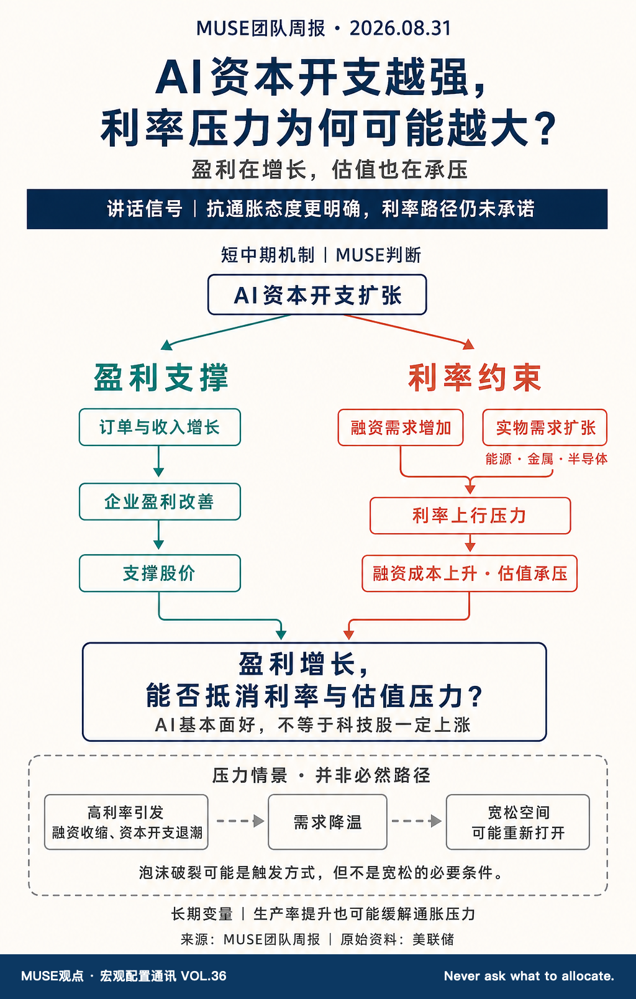

沃什按住了短期风险，但按住的代价是利率长期更高
上周，市场一直等着美联储主席凯文·沃什在杰克逊霍尔开口。我也在等。话说完，大家先松了口气，可我看下来，这更像是把眼前的火苗按住了，屋子里的温度并没有真的降下来。
先弄懂一件事：美联储为什么一会儿怕物价，一会儿怕失业？
美联储主要盯两件事：物价别涨得太快，大家尽量都有工作。物价涨得太快，就加息，让借钱变贵、花钱变少，商家没那么容易继续涨价；工作突然变少，就降息，让借钱便宜一点，鼓励企业投资和招人。
如果就业还算稳、物价却偏高，美联储通常不会急着降息，因为经济暂时不需要“抢救”，它可以先专心压物价。反过来，如果失业明显恶化，即使物价还没完全回到理想水平，也得考虑先救经济。
还有一个容易绕晕的点：短期利率主要由美联储直接决定，长期利率则是市场对未来很多年的猜测。沃什态度强硬，压住的是市场对“物价会失控”的担心，不是长期利率本身。市场更相信物价最终能被治住，长期利率本来有机会下降；但美国政府借钱多、AI 公司投资猛，又会把长期利率往上推。所以这次更像是少涨一点，而不是压力真的消失。
说对了的：上一期我提醒，长期美债利率还是易上难下，全球借钱的成本也在变贵。这个方向没有变，美国借 30 年期资金仍要付出 5% 以上的年利率，欧洲和日本借长期资金也越来越贵。
需要修正的：我之前把讲话后的反应概括成“短期利率涨、长期利率跌”，说得太省事了。实际是两边都涨，只是短期利率涨得更多。换句话说，沃什的硬话让市场少担心了一点未来物价失控，但长期借钱贵的问题并没有消失。
沃什的态度：先把物价管住，再谈轻松日子
这次杰克逊霍尔讲话，是沃什上任后第一次系统讲清楚自己的想法。杰克逊霍尔就是全球央行官员每年碰头的一场重要会议，美联储主席在这里说什么，市场常常会当成后面政策的风向标。
我把整场讲话压缩成三句话。第一，2% 的通胀目标不会放松。PCE（美联储最看重的通胀指标，简单说就是物价涨了多少）不只要往下走，还得降得够明确、够持续。第二，美国就业目前还算稳，不需要马上靠降息来救。第三，沃什不愿提前许诺下一步一定加息还是降息，他更想看数据再行动。
这里要划一条线：沃什没有直接说“9 月一定加息”，也没有在讲话里承诺要托住长期美债。讲话后，市场一度把 9 月加息看成接近五五开的可能，但那只是投资者当时的押注，不是政策通知。
我的理解是：沃什想让市场重新相信，美联储说要压住物价，就真的会采取行动。市场可以不知道下一次利率怎么动，但不能怀疑它只是说说而已。
这像医生告诉家属：“病能治，但这几天治疗会有点疼。”家属虽然心疼，至少知道病情有人管。最让人慌的反而是医生含糊地说“再看看吧”。央行态度强硬，也是同一个道理：眼前的利率可能更高，但市场如果相信物价涨幅最终能被压下来，就不会担心高利率持续很多年，长期利率反而有机会下降。
下一次 FOMC（美联储决定利率的会议）在美国当地时间 9 月 15—16 日召开，北京时间 9 月 17 日凌晨公布结果。在那之前，9 月 4 日的就业数据和 9 月 11 日的物价数据最重要：如果物价仍高、就业仍稳，美联储就更有理由加息，或者让现在的高利率维持更久；如果物价明显降温，或者失业的人突然变多，它才有理由暂停加息，甚至重新考虑降息。
AI 投资越猛，利率越难很快降
这是本期最值得记住的矛盾：AI 的生意可以很好，AI 股票却不一定一直涨。原因不复杂。科技公司大建数据中心、买芯片、抢电力，需要借更多钱，也会和其他行业争抢能源、金属、芯片这些有限的东西。借钱的人变多、抢东西的人也变多，利率和物价就更容易被推高。

利率为什么会压股价？因为利率高时，存钱和买债也能拿到不错的回报，投资者就不愿意为一家公司很多年后的利润付太高价格。于是市场会问一个很现实的问题：这家公司未来多赚的钱，够不够抵消借钱变贵，以及股价已经不便宜这两件事？
像一条街突然同时开十家网红店。装修公司、店铺、电力和设备都被抢，租金和材料费一起涨。店里生意再好，也得先覆盖更高的成本。AI 现在就有点像这条街：收入在增长，但成本和利率也在追着涨。
所以我不把“高利率持续”理解成“美联储会一路连续加息”。更准确的说法是：只要物价降得很慢、AI 公司还在大笔花钱，利率就很难快速回到舒服的位置。真正能松一口气的情况有三个：AI 公司减少投资，企业借钱和扩建明显放慢；同样数量的员工和设备能生产出更多东西，成本不再涨得那么快；或者高利率让大家少消费、企业少招人，物价和就业一起降温。
科技股接下来拼的，不只是“赚没赚钱”，而是“赚得有没有市场想得那么多”。好消息已经写进价格后，稍微不够好，也可能变成坏消息。
这也是我对美股科技和 AI 硬件保持谨慎的原因。这些公司确实还在赚钱，但市场期待已经很高；一旦实际赚到的钱没有大家想得那么多，股价就可能很快下跌。A 股高位科技也会先被情绪带着回调，而不是立刻变成机会。等市场把过高的期待降下来，再看哪些真正有订单、有利润的公司能更早稳住。
这条利率主线也会传到黄金和比特币。黄金一边受益于各国央行买金和战争风险，一边又会被高利率压住；比特币在市场紧张时更像波动很大的风险资产，高利率会让资金更愿意去存款和债券，而不是追逐它。只有当市场开始相信利率会下降、可用来投资的钱重新变多，比特币的环境才会明显改善。
地产的水管修了，水还没流进来
国内这周最重要的变化在房地产。政策主要做了三件事：房子怎么卖、银行怎么管项目的钱、贷款能拖多长。方向很清楚——以后更强调一个项目一本账，钱尽量留在项目里，先把房子建好和交付这件事管住。
主办银行制（每个房地产项目指定一家主要银行，全程盯住资金）开始建立。开发贷款的期限也跟着项目周期走：预售项目最长 5 年，现房销售项目最长 7 年。个人住房贷款最长可以做到 40 年，但这是上限，不是所有人自动都能贷 40 年，具体还要看银行和借款人怎么谈。
这里最容易误读的地方有两个。第一，不是所有楼盘立刻都改成房子建好后再卖，已经在预售的项目还能按过渡规则继续推进。第二，贷款年限拉长能让每个月少还一点，却不能让工作和收入突然更稳定，而且几十年累计付掉的利息通常会更多。
这轮改革更像是把一栋老房子的水管重新铺好：漏水和挪用的风险会小一些，但水管修好，不代表水马上流进来。真正的“水”还是买房需求。要确认市场真的回暖，得看到房子更好卖、房企手里的钱变多、更多楼盘开始建设，而且能持续施工。
所以我的判断没有变：新规则能降低烂尾和资金被挪走的风险，也更有利于资金充足的房企，但还不能证明买房的人已经变多。钢铁、水泥和化工品也一样，要先看到楼盘真的开工、房子真的卖得动，不能只因为政策出来就提前押注需求回暖。
原油则是另一套逻辑：利率高会让全球需求承压，但短期油价更容易被“油到底能不能顺利运出来”推动。冲突消息本身不够，真正要看油轮装了多少货、运输保险有没有变贵、买家能不能按时收到油。
先防回调，再等真正的机会
一句话收尾：沃什的硬话能让市场更相信物价最终会被压下来，却不能马上让利率下降；AI 公司越大手笔地投资，借钱、买芯片和用电就越贵，科技股也就越需要拿出真正的利润证明自己。